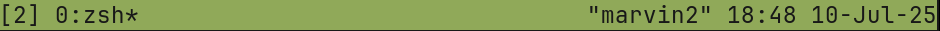
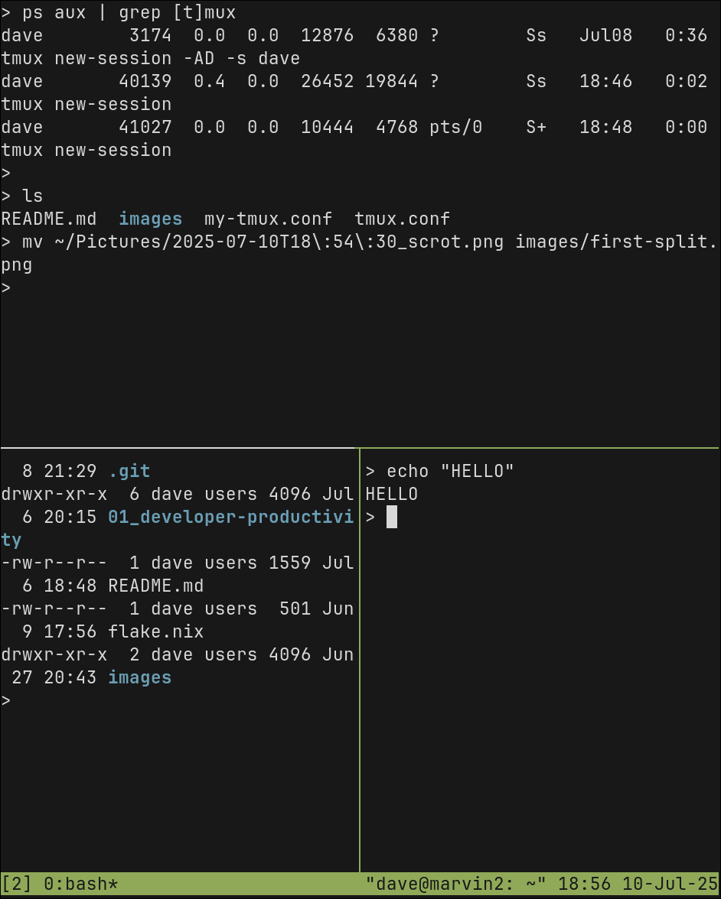

Tmux Basic Usage
Overview
There are a lot of keybindings and commands, but you really only need to know a few to use tmux effectively. You may want to use a cheat-sheet as a quick reference.
From the tmux manual pages:
tmux is a terminal multiplexer: it enables a number of terminals to be created, accessed, and controlled from a single screen. tmux may be detached from a screen and continue running in the background, then later reattached.
Terms:
prefix- Theprefixis the special key combination that must occur before any tmux commands. For example,Ctrl+aquickly followed by?to open the help menu.Terminal multiplexer- Manages multiple ‘pseudo terminals’ inside of one virtual terminal.Session- A single collection of terminals under management oftmux.Window- The visible ‘screen’ showing an arrangement of one or more terminals. A window can be split into multiplepanes, and manages arrangement of thosepanes.Pane- One terminal in a layout.Panescan be arranged in awindowor moved to otherwindowson the samesession.
Sessions, Windows, Panes
Follow along with the commands as you read and we’ll walk through the basics.
First, start tmux from your terminal:
tmux
You have just started a new session. If you disconnect from this session, or accidentally close your terminal, you will be able to re-attach and continue on.
Now, instead of looking at a regular terminal, you are looking at a new window that has one pane, which takes up the whole screen. The window is like a “page” or a “tab”, and on that window we can create and arrange multiple other panes to create a layout and navigate between terminal instances.
At the bottom of the screen, you should see the statusbar and a “tab” with the name of your current session. As you open more windows, they will be added to the statusbar and the active window will have an asterisk * by it’s name.

The Prefix
Entering commands in tmux is a little different than what you may be used to. To interact with tmux, you use a short sequence of key combinations. Every command starts with a common prefix key(s), which is the signal to tmux that the next key combination is the command to execute.
The default keybinding for the prefix is Ctrl+b (or possibly Ctrl+a in some systems). After you enter the prefix sequence, then you have a short window to enter your actual command.
For example, split the current horizontally:
Ctrl+b(or whatever yourprefixis)"(double-quote)
If you did it correctly, you should see the screen now split into two equal-sized terminals.

The notation that tmux uses for this command is written like C-b ". Since the prefix is used for every command, it is frequently just omitted from the documentation, so this example would just be " and you would know that you have to type the prefix first.
Sessions, Windows, and Panes
Now that you have two panes open, move between them with prefix and then one of the arrow keys. If you created a new window below, that would be C-b ↓. To move back up, you can use C-b ↑. You could also use C-b ; to move to the “previous” pane.
Now move to the bottom pane and open a new vertical split:
C-b ↓to move down.C-b %to make a vertical split.

To close one of the panes, first move to it and then run exit at your command line, or use Ctrl+d to do the same thing.
Try moving the split that you just created and close it:
C-b →to move to the right pane.Ctrl+dto exit the shell.
When every pane has been closed, then the window is terminated. When every window is terminated, then tmux will exit.
The other way to exit is to run the detach command. Try detaching from your session now, by pressing C-b d. This should drop you back to your original shell from before you launched tmux.
Now close and quit out of your terminal emulator window and open a fresh one, and try the following commands:
tmux lsto list the active sessions.tmux attachto attach to the session we started earlier.
You can have multiple sessions for different tasks/projects and switch between them. You can also run tmux on a server or shared host, where you can have multiple people connected to the same session from different clients, and everyone can see the same things and interact at the same time. This is a good way to do pair programming from the command line with a remote team.
Back at our tmux session, try creating a new window and moving between them:
C-b cto create a new window.C-b nto move to the next (right) window.C-b pto move back to the left window.C-b lto move to the previous (last) window.
The “names” of the windows are printed on the status line. tmux will try to determine what program is running in that window and chose a name automatically, but you can name the windows yourself to keep organized by using C-b ,.
Try renaming your first window to “SHELL” and the second window to “EDITOR”.
Resizing
Now create a couple of split panes on one of the windows and we’ll resize them to create the layout that you want.
- Create a couple of splits with
C-b "andC-b %. - Move to the top-left pane with
C-b ←andC-b ↑. - Resize the current
panevertically withC-b Alt-↓and/orC-b Alt-↑.- TIP: After you hit
C-b Alt-↓the first time, holdaltand press↓repeatedly. - You only have a second between key presses before it will exit command mode and you have to start again.
- TIP: After you hit
- Resize horizontally with
C-b Alt-→andC-b Alt-←.
Zoom
One more very useful feature is zoom. When your current window is split into multiple panes, you can zoom-in and make one pane full-screen temporarily.
- Navigate to one of your split
panes. C-b zto zoom-in.C-b zagain when you want to zoom-out.
There are a lot more commands to do things like rotate your layout, split a pane into its own window or join and merge panes from other windows, etc. But the commands covered here should be enough to do most of what you need.